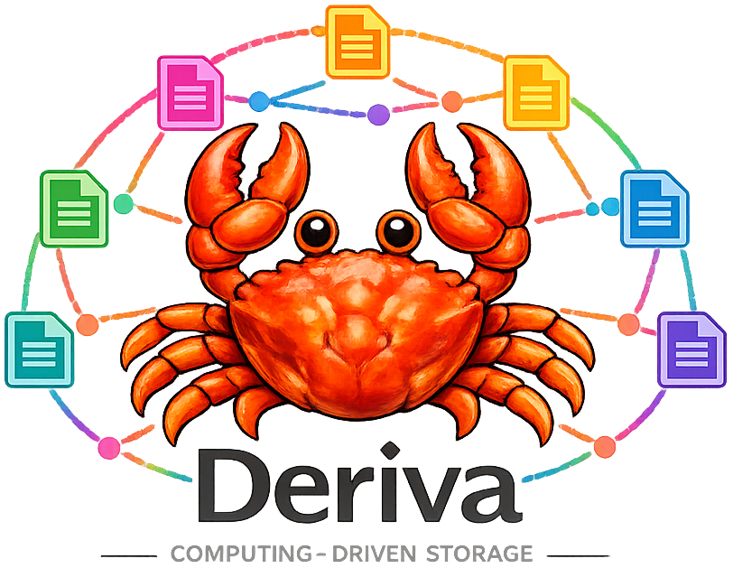

Back to Deriva
Quick Navigation
1. Introduction
2. Background
3. StreamChunk Protocol
4. Streaming Compute Functions
5. Auto-Wrapping
6. StreamPipeline
7. CAS Invariants
8. Evaluation
9. Tradeoffs
10. Conclusion
Streaming Materialization in a Computation-Addressed Store
Chunk-Level Dataflow over Dependency Graphs

Author:
Mehmet Yalcinkaya, PhD
Principal Platform Engineer
Date:
June 2025
Loading Abstract...
Table of Contents
1. Introduction
2. Background
3. StreamChunk Protocol
4. Streaming Compute Functions
5. Auto-Wrapping
6. StreamPipeline & DAG-Aware Construction
7. Integration with CAS Invariants
8. Evaluation
9. Tradeoffs
10. Conclusion
Loading Introduction...
Loading Background...
Loading StreamChunk Protocol...
Loading Streaming Compute Functions...
Loading Auto-Wrapping...
Loading StreamPipeline...
Loading CAS Invariants...
Loading Evaluation...
Loading Tradeoffs...
Loading Conclusion...